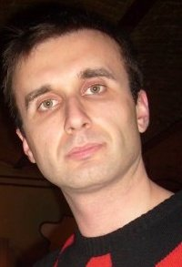

Немного обо мне

Добрый день. Меня зовут Пётр Катанич. Поступил на курс Java программист GeekBrains.Поучаствовать в реальной командной разработке это то что необходимо каждому начинающему программисту.Почему выбрал Java? Потому что Java идеально подходит как первый язык. Думаю, что начинать разумно всё-таки с проверенного временем языка. После хорошо изученог языка Java не будет проблем освоить Котлин или C# к примеру. Кроме программирования изучаю историю Европы 19. века. Желаю успехов всем, кто ступил на путь программиста.